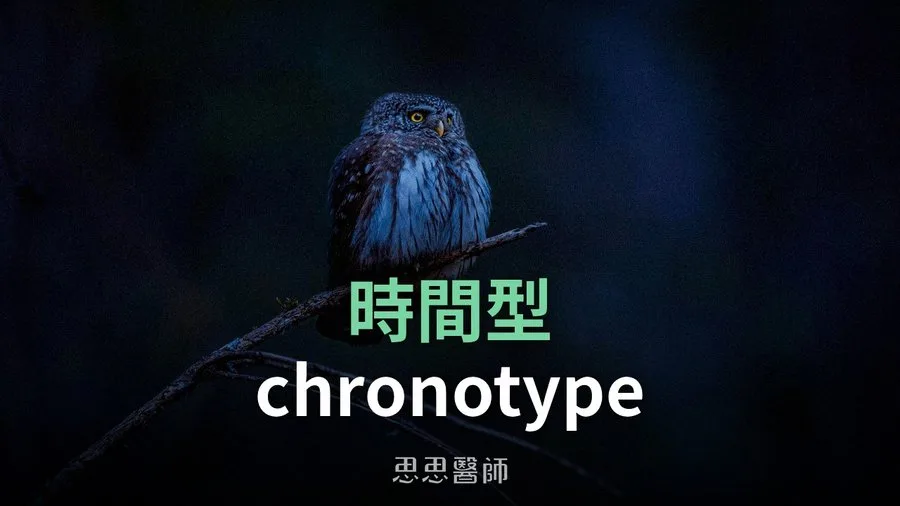
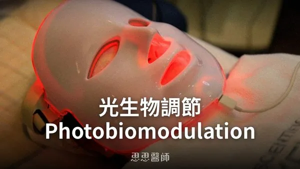
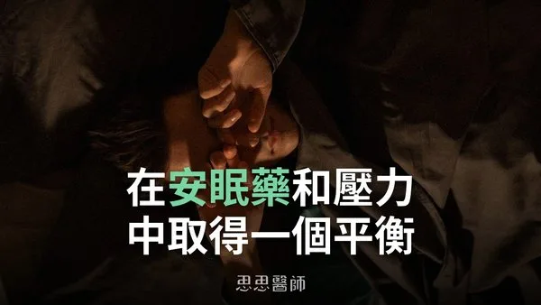

時間型 chronotype

每個人習慣入睡和起床的時間本來就不一樣，這跟基因、年紀都有關係，一般會簡單分成「早鳥型」和「夜鶯型」兩種時間型（chronotype），但實際上多數人更接近中間值，真正極端早睡或極端晚睡的只是光譜兩端的少數。
年紀對時間型的影響比直覺想的更細緻。孩童的作息其實偏早，進入青春期後才會明顯往後延，2004年一篇發表在《Current Biology》、分析約25000份問卷的研究發現，晚睡傾向會一路加重到大約20歲才達到高峰，而且女生達到高峰的年紀（平均19.5歲）比男生（平均20.9歲）更早；過了這個高峰，不論男女都會隨年紀增長逐漸往早鳥型移動，這也是銀髮族普遍偏早鳥型的原因。換句話說，「大部分小孩是夜鶯型」這個說法並不精確，真正偏夜鶯的是青少年到剛成年這段時期，不是幼童。
男女之間確實有生理上的時間差，2011年一篇發表在《PNAS》、讓受試者待在完全隔離光線與時間線索的實驗室環境下測量「內生生理週期」的研究發現，女性平均生理週期為24小時5分鐘，男性平均為24小時11分鐘，兩者確實相差約6分鐘（P<0.01）；同一份研究也發現生理週期短於24小時（代表更容易偏早鳥型）的女性比例是35%，男性只有14%，大約是男性的2.5倍，這也是女性整體偏早鳥型的生理基礎。
至於早鳥、夜鶯各占多少比例，2017年一篇發表在《PLOS ONE》、分析超過5萬人美國時間利用調查的研究呈現的其實是一個連續的鐘形分布，不是乾淨切成三等份，大多數人落在中間地帶，兩端的極端早鳥和極端夜鶯反而是少數。與其糾結自己屬於哪個百分比族群，不如直接測量自己真正的作息。
現代人常誤判自己的時間型，一個常見原因是手機、電腦螢幕的光線刺激，抑制了退黑激素分泌，讓人誤以為自己「天生」就是晚睡的夜鶯型。2011年一篇發表在《Journal of Clinical Endocrinology & Metabolism》的研究讓受試者暴露在一般室內光線下，結果99%的人退黑激素開始分泌的時間被推遲，而在原本該睡覺的時段暴露光線，85%的受試者退黑激素被抑制超過一半，這說明環境光線本身就能讓一個人看起來比真實時間型更晚睡。
要找出自己真正的時間型，可以先排除這些干擾：
- 睡前三小時避開手機與電腦螢幕的光線
- 睡前可配戴濾藍光眼鏡
- 居家燈光改成暖黃光（色溫約3000K）
- 睡前10小時避免攝取咖啡因
- 睡前避免激烈運動
- 白天找時間接觸自然光（不需要直視）
- 睡前泡溫水澡、冥想或聽輕音樂
排除這些干擾之後，最準確的做法不是填問卷猜測，而是連續幾天不設鬧鐘，讓身體自然醒來，記錄入睡與起床的時間。這其實就是慕尼黑時間型問卷（MCTQ）的核心邏輯，2003年發表在《Journal of Biological Rhythms》的研究正是用「自由日（沒有工作束縛的日子）的實際睡眠時間」來推算一個人真正的生理時鐘，而不是用他平常被工作綁架的作息去判斷。
如果你是那種平日被鬧鐘叫醒七點起床，週末卻能一路睡到中午的人，這種「平日跟假日作息差很大」的現象在研究上稱為「社交時差」（social jetlag），代表平日很可能長期處於睡眠負債的狀態，只是靠週末補眠硬撐，而補眠通常補不滿那個缺口。2017年一篇發表在《Journal of Biological Rhythms》、追蹤1585位成人的研究發現，社交時差超過2小時的人，代謝症候群（包含血壓與血糖的異常）的風險比社交時差不到1小時的人高出約64%。了解自己的時間型，不是為了貼標籤，而是為了讓作息更貼近身體本來的節奏，減少這種長期的錯位。
參考資料
1. A marker for the end of adolescence（Curr Biol, 2004）DOI 10.1016/j.cub.2004.11.039
2. Chronotypes in the US - Influence of age and sex（PLOS ONE, 2017）PMID 28636610
（本文由我規劃架構與觀點，並協同 AI 校正與潤飾語句）
 空腹小雞跟思思醫師一起斷食，順便養一隻小雞來養小雞 →
空腹小雞跟思思醫師一起斷食，順便養一隻小雞來養小雞 →
好朋友早餐信
一週一封：《健康駭客週報》這集的研究重點，加上家醫專欄這週的新文章。免費，隨時可以退訂。
延伸閱讀

光生物調節 Photobiomodulation
紅光與遠紅外光能刺激粒線體產生能量，改善睡眠、減輕疼痛與憂鬱，每週3至5次、每次10至20分鐘較為適宜。

光，進入你的細胞，每種顏色做的事都不一樣
不同波長的光透過觸動生色團激活特定的細胞信號，藍光殺菌但影響褪黑激素、紅光與近紅外線能提升粒線體能量生成。

在安眠藥和壓力中取得一個平衡
安眠藥可在高壓期短期使用且建議兩週內；傳統藥物會壓縮深眠，ramelteon 與 lemborexant 對睡眠結構較友善，也可用 CBT-I。